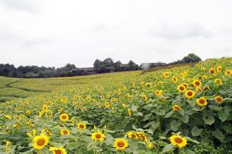

在威斯敏斯特教堂旁边，矗立着一块墓碑，上面刻着一段非常著名的话:“当我年轻的时候，我梦想改变这个世界;当我成熟以后，我发现我不能够改变这个世界，我将目光缩短了些，决定只改变我的国家;当我进入暮年以后，我发现我不能够改变我们的国家，我的最后愿望仅仅是改变一下我的家庭，但是，这也不可能。当我现在躺在床上，行将就木时，我突然意识到:如果一开始我仅仅去改变我自己，然后，我可能改变我的家庭;在家人的帮助和鼓励下，我可能为国家做一些事情;然后，谁知道呢?我甚至可能改变这个世界。”
漫漫青春路，多少岔路口，青春蹉跎，机会错过。而我，庆幸遇上了传智播客
敲完最后一行代码，走出办公室，站在曾经觉得特别高大上的落地窗前，看着倒影中的自己，虽说有点累，但感到特别充实，许久没有过这种踏实和平静的感觉。我喜欢并珍惜作为女程序员的日子。这一切，都要感谢传智播客以及传智播客的每一位老师。

我庆幸在最美的年华、最渴望改变的时候遇到了传智播客，庆率遇上了传智播客的老师，因为你们的专业和专注，才成就了我向往的IT梦，才让我在青春的路上开满了理想的花。在此真心感谢传智播客的每一位老师，纵然时光荏 再，师恩永远铭记在心。